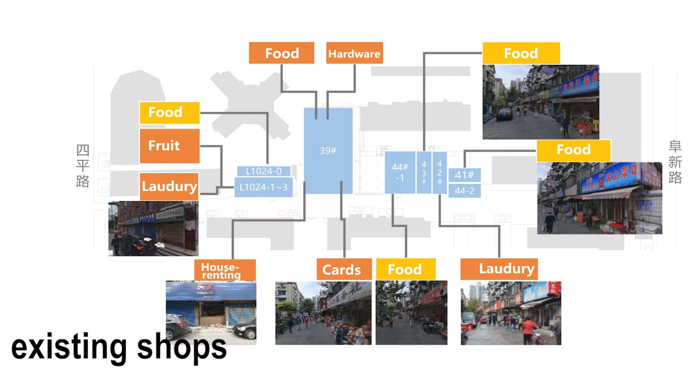
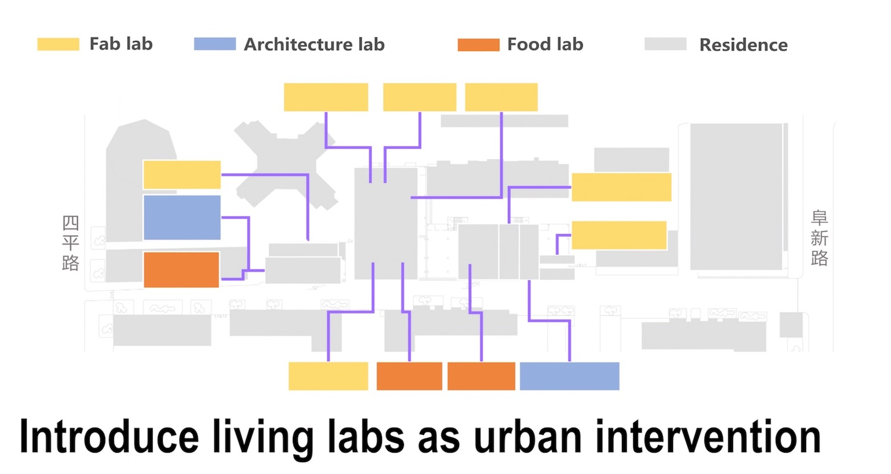
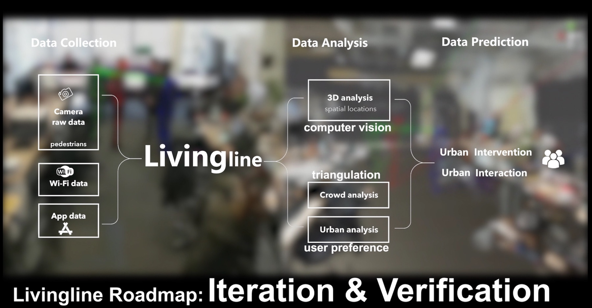

Project Background
About City Science Research Group[1]
The City Science research group proposes that new strategies must be found for creating the places where people live and work, and the mobility systems that connect them, in order to meet the profound challenges of the future.
What the group is doing now is investigating how new models for urban architecture and personal vehicles can be more responsive to the unique needs and values of individuals through the application of disentangled systems and smart customization. The group is developing technology to understand and respond to human activity, environmental conditions, and market dynamics. We are interested in finding optimal combinations of automated systems, just-in-time information for personal control, and interfaces to persuade people to adopt sustainable behaviors.
About City Science Lab Shanghai[2]
Tongji University, Shanghai, and the MIT Media Lab's City Science team are co-developing a version of the MIT CityScope platform for urban analysis, efficient resource utilization, and spatial programming. The MIT CityScope is a tangible, augmented reality platform used to visualize complex urban relationships, simulate the impact of multiple urban interventions, and support decision-making in a dynamic, iterative, evidence-based process.
Research in CityScope LivingLine
We believe if a typical street inside a neighborhood can only be used for transportation, it would be a great waste of space and resource in a big city like Shanghai. Therefore, how can we stimulate its vibrancy? Research scientists in MIT mentioned urban intervention as an experimental tool. What we do is introducing some living labs into the experimental street in Yangpu district, Shanghai, China, and continuously collecting the data from Wi-Fi and camera to analyze the influence of urban intervention through people's behaviors.
Because this is an ongoing research project, some research data and achievement can not be open to public now. Therefore, I am sorry that I am allowed to present some detailed information about this research project. 

Wi-Fi Data Analysis
Pre-processing
The raw data was directly collected and uploaded by probes and was not in the right format. Besides, there was some wrong data in it. Therefore, The first work for us is to pre-process the raw data by clean the wong and broken part, and sort to the right format such as JSON or CSV for future analysis. Then, in order to do the visualization, we also regroup the data based on detected time and x-y coordinate.
In the visualization part, we developed a lot of demos in order to find the feature of data, by using Grasshopper in Rhino, GIS and several open-source JavaScript libraries.
Camera Data Analysis
In this research section, we need to find the most suitable people detection algorithm for the project. We first used 240 images to test each algorithms, then scored them according to the results. After that, we used more images to do the second round test.


We are still working hard in the first step of camera and Wi-Fi data analysis now, and we will combine the result of these two part of data to see if we can find something valuable for the urban intervention we did.